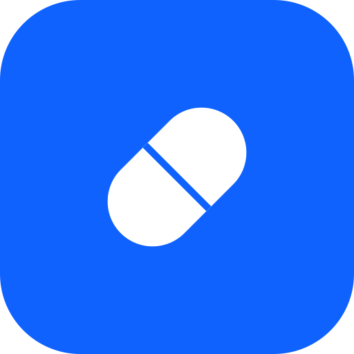

CapsuleSur iPhone et iPad, ajoutez Capsule à votre écran d'accueil pour l'ouvrir comme une application, en plein écran. L'opération se fait dans le navigateur Safari et prend moins d'une minute.
Rendez-vous sur capsule.kiloctet.com avec le navigateur Safari (l'installation n'est pas possible depuis Chrome sur iPhone).
Il se trouve dans la barre en bas de l'écran (une flèche vers le haut sortant d'un carré).
Faites défiler la liste des options et appuyez sur « Sur l'écran d'accueil ».
En haut à droite. L'icône Capsule apparaît alors sur votre écran d'accueil ; appuyez dessus pour ouvrir l'application.